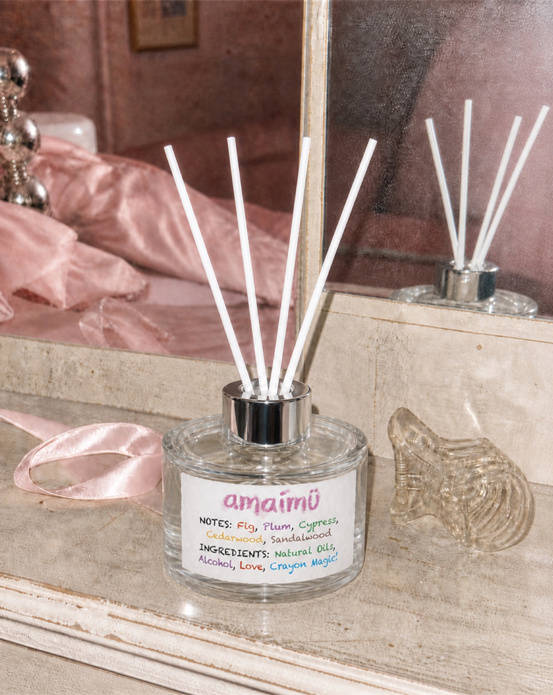
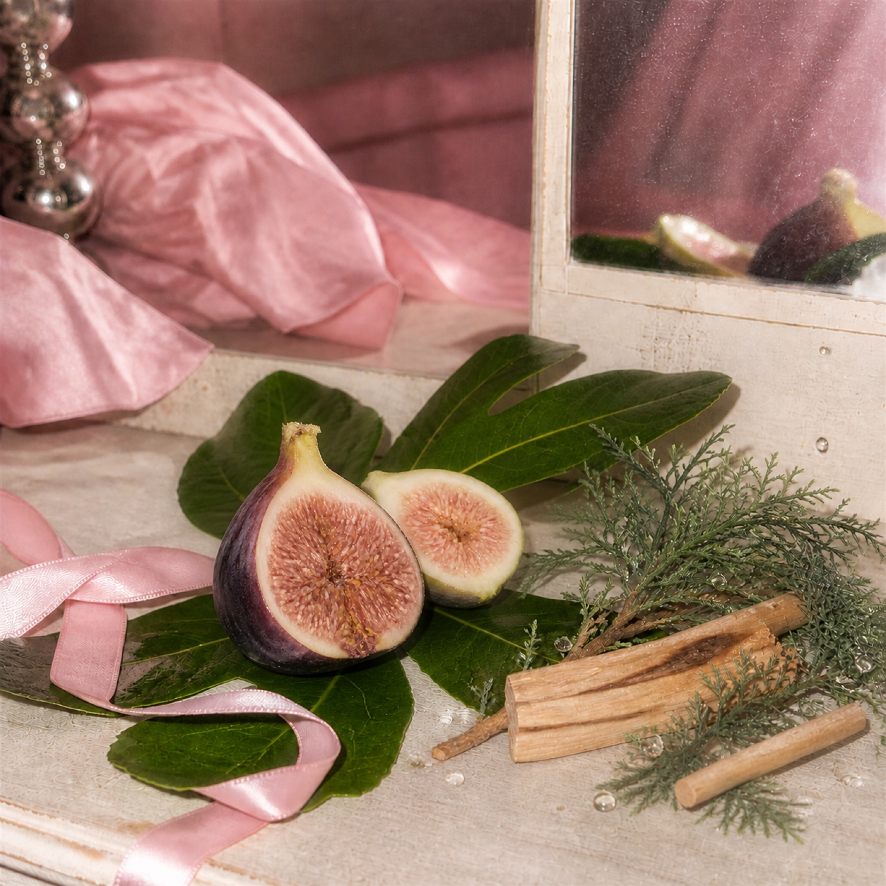
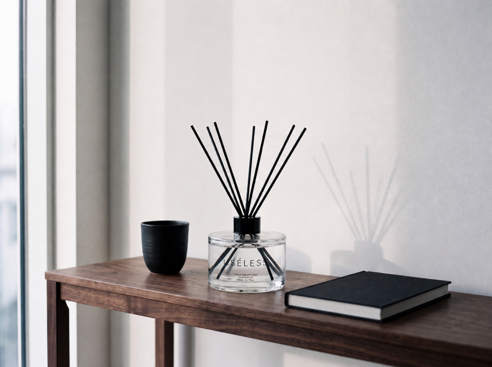

나를 위한 선물
아무 기념일이 아니어도, 매일 수고하는 나에게.

First consumer brand by USÉLESS
just for you.
Not the whole room.
귀여워서 자꾸 눈길이 가는 것.
내 책상에 놓고, 친구에게도 선물하고 싶은 향을 만듭니다.
마음에 드는 컵, 손때 묻은 노트, 귀여워서 데려온 작은 물건. amaimü도 그렇게 내 자리에 놓고 싶은 향입니다. 나를 위해 고르고, 떠오르는 친구에게 건네는 작은 선물처럼요.
A little everyday
책상 한편, 침대 옆, 화장대 앞. 내가 매일 바라보는 자리에 어울릴 모습을 떠올리며 골라보세요.


An object to love
핑크와 실버, 크레용으로 쓴 듯한 컬러 레터링. 노트와 문구가 놓인 책상에 작은 표정을 더합니다. 친구의 자리를 떠올리며 고르는 선물로도요.
아무 기념일이 아니어도, 매일 수고하는 나에게.
친구의 책상과 좋아하는 색이 떠올랐을 때.
좋아하는 물건들 사이에 향과 색을 더하고 싶을 때.

Product direction / Concept visual
귀여운 모습에 먼저 눈길이 가고, 무화과와 나무의 향이 궁금해지는 디퓨저. 내가 머무는 자리와 선물할 사람의 취향을 떠올려보세요.
현재 제품을 준비하고 있습니다. 이미지에는 개발 중인 콘셉트가 포함되며, 최종 향·구성·표시사항과 판매 일정은 확정 후 상품 페이지에서 안내합니다.

The same belief, expanded / USÉLESS
서울 여행을 기억할 물건이나 장소의 이야기가 담긴 선물을 찾는다면, 유슬레스서울의 또 다른 향 브랜드 USÉLESS를 만나보세요.
Enter USÉLESS